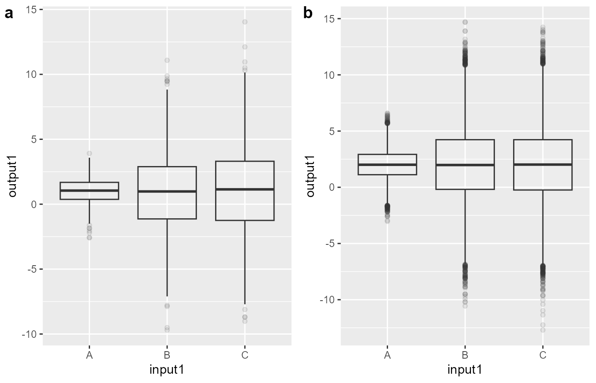

This app is designed to plot simulation results of clinical trials. Its main feature is allowing users to simultaneously investigate the impact of several simulation input dimensions through dynamic filtering of the simulation results. A more technical description of a previous version of the app can be found in Meyer et al. The app is optimized for FACTS simulation output files, but can be used with any dataset in .csv format.
The app is part of the airship R package, which can be downloaded from Github using:
# install.packages("devtools")
devtools::install_github("el-meyer/airship@*release")In order to run the app, load the library and call the airship() function:
First, you need to navigate to the Data tab in the sidebar to the left and upload some data. If this is your first time using the app, we suggest to tick the checkbox “Use example dataset” and then select “Toy simulation study” from the dropdown menu “Which example dataset?” in the top left corner to familiarize yourself with the workflow of the app.
This toy example dataset has the following structure:
Two outcomes (output1 and output2) were simulated using four simulation input variables (input1-4). The input variables take three different values each and for every unique combination of input variables, the outcomes were simulated 1000 times (replications) following some random mechanism.
After checking “Use example dataset”, you might have noticed three things happening:
Different graphs in airship use either the original or the summarized dataset. This is all done automatically and not something you as a user have to worry about.
The next step is to (optionally) choose focus variables and corresponding default values for the simulation input parameters by navigating to the Focus Variables Tab. For now, select “Use focus variables” and just click on the button “Take first row as default values”. If you want to learn more about focus variables, and why they are essential to this app, see section Focus Variables Tab.
You are now ready to create some plots! Click on any of the remaining plot tabs to the left and customize the plot to your liking. This should be straightforward.
You are now familiar with the general functionality of airship and may revisit the Data tab to upload your own data for visualization!
In this tab, you can select/upload the dataset you wish to visualize using airship. Please note that currently the maximum file size for upload is 100MB.
There are two types of supported data: Datasets that contain individual simulation replication level results or summarized results. If you tick the “Use example dataset” checkbox, you can see an example of both of these datasets. Data needs to be in csv format.
First, the user needs to choose whether
If either b. or c. were chosen, the user needs to upload the csv file using the “Browse” button. If c. is chosen, the user needs to choose the appropriate csv separator, the number of initial lines of the csv file to skip and specify which column in the dataset corresponds to the last input variable. This is set via the “Select last input variable” dropdown menu.
If b. was chosen, the user is presented with additional options to modify the dataset. Those are:
Finally, if c. was chosen, the user needs to specify if the dataset contains individual simulation replication level results or has already been summarized. This is done via the “Summarize over individual simulation?” button, which unlocks another dropdown menu where the column corresponding to the replication variable needs to be specified.
If a dataset with individual simulation replication level results has been uploaded, the user may choose a method of aggregation (currently mean and median for location parameter as well as standard deviation (sd) and standard error of the mean (sem) for variation parameter are available).
In the resulting table “Original Data”, the user may further filter the dataset to exclude observations.
Remember the structure of our example data:
Imagine you have a simple boxplot that shows the impact of input1 on output1. Since input1 has three levels, you would expect three boxes showing the distribution of output1 conditional on each of the three levels of input1. What about the different levels of input2-4? Generally we have two options: a. fixing some values for input2-4 (thereby subsetting the data that is plotted) b. ignoring input2-4 and “blurring over” them.
The resulting plots of the two options are below; for the option a, we chose input2 = 1, input3 = Z and input4 = 11.

If we look closely, we may observe that the mean of output1 for different levels of input1 is different between figures a and b, indicating that there is some underlying mechanism we have not yet grasped with this plot. We may or may not assume that input2-4 have an effect on output1, however if we assume they have an effect, ideally we would fix these to a certain level (by subsetting the dataset, see option a mentioned previously) and then interpret the boxplot as “This is the relationship between input1 and output1, given input2 is 3, input3 is Z and input4 is 12.” However, if we want to plot the effect of input2 on output1, we cannot use the subsetted dataset from the previous boxplot, since this dataset contains only the data for a certain level of input2 and all the information on input1, which we do not want for this plot. In a manual workflow, for every plot we would create a new subsetted dataset, but airship automates this by having the user choose focus variables and corresponding default values for every simulation input variable, according to which the dataset is filtered. If the simulation input variable is chosen to be displayed in a plot (as input1 was chosen as the grouping variable in the boxplot), the dataset is unfiltered for this variable.
If either we are happy to “blur over” the effect of a simulation input parameter (e.g. check model performance across different assumptions regarding the treatment effect) or certain input variables are redundant in the sense that they describe the same underlying variation in simulation input parameters (e.g. having a column “scenario” that is a unique identifier for combinations of input variables), they need not be chosen as focus variables and hence no default value for them is chosen.
Instead of running
airship()and uploading the dataset directly in the app, the dataset can be supplied directly when running the app using the dfData argument. Please note that if dfData is provided, the dataset cannot be changed inside the app anymore. Furthermore, we can specify the last input variable and the (if it exists) simulation replication variable using cLastInputVar and cReplicationVar.
airship(
dfData = ExampleData1,
cLastInputVar = "input4",
cReplicationVar = "replications"
)